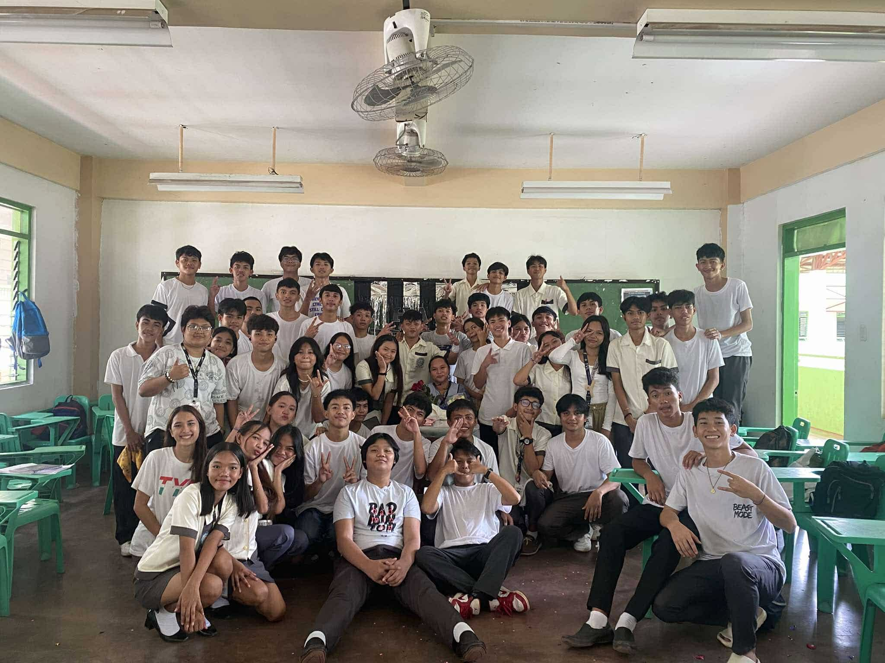
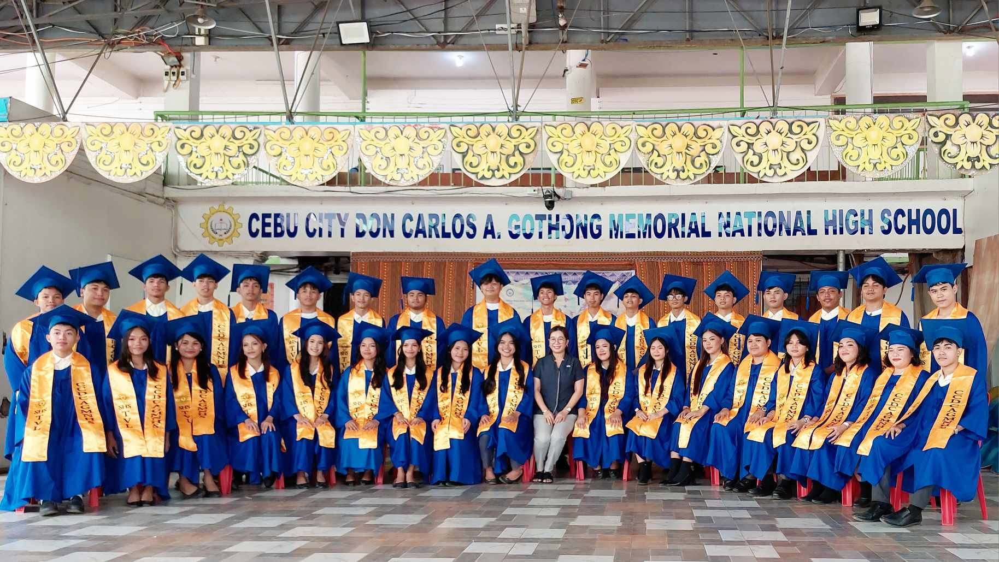

SHS DAYS
My Senior High School Days
During 2024, I entered Senior High School at Gothong National High School. During my time as a TVL student, I learned many new things and gained valuable knowledge and skills.
Senior High School Experience
GRADE 11
During my first year of Senior High School, I had a lot of fun and learned many new things. I made new friends and had the opportunity to participate in various activities and events.
I also learned about different subjects and gained valuable knowledge that will help me in the future. Overall, my first year of Senior High School was a great experience that I will always remember.

GRADE 12
During my second year of Senior High School, I continued to learn and grow as a student. I had the opportunity to take on more responsibilities and challenges, which helped me develop my skills and knowledge even further.
I also had the chance to participate in various extracurricular activities and events, which allowed me to explore my interests and passions. Overall, my second year of Senior High School was a rewarding experience that helped me prepare for the future.
